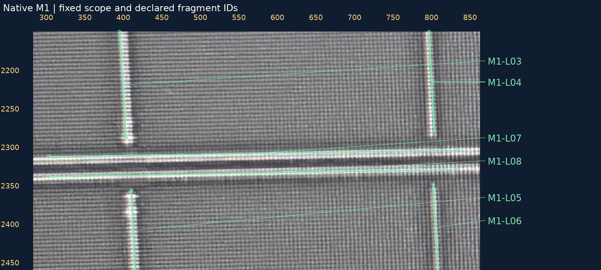
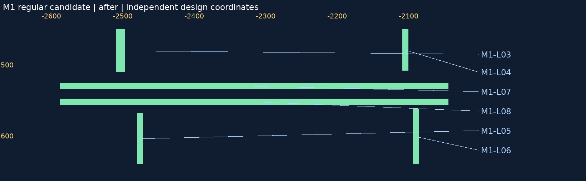
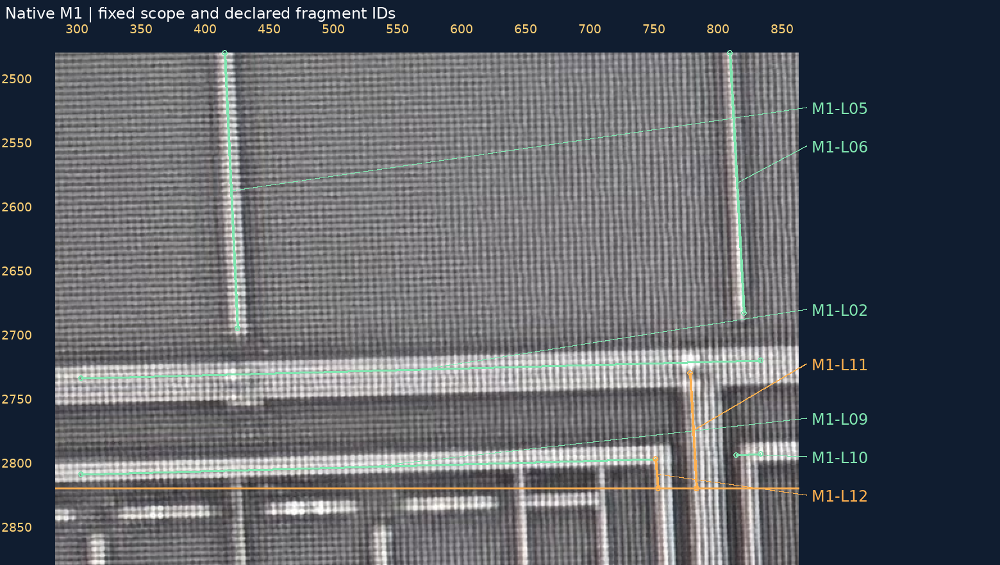
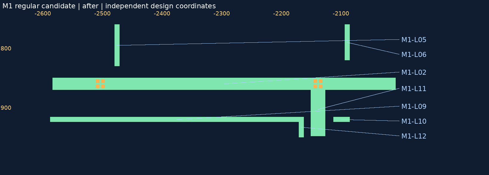

当前联合几何


2026-10-30 · 原生范围[300,1870,830,2820] · 新旧设计同坐标比较
原清单的1处部分竖支及7个未建片段已补。独立扫图又发现旧清单漏了L11主干向下出口、L12左段短回折，均在同一原生范围，一并补入。现在声明清单12/12均有对应几何；这不是全照片或全网覆盖率。
只给原C-M1-SPINE追加两块，另加7个独立M1片段，并给新L09加一个来源回折块。现在46金属候选、30已审局部接口、179设计候选孔。旧30条裁决、179孔边界/中心和原骨架/源锚点/原块保持，原点/视口/尺度不变；没有新增VIA或确认网络边。
工程检查：同层宽度/间距、6项来源次序、10项局部留隙、完整30组候选孔包围均通过。来源尺寸、PDK尺度、精密投影和照片穷尽性未知；几何仍是AI候选，需本次集中视觉验收。
12个声明片段全部已建；L11/L12为复查新增。8处已审W3/W4接口和全部30条历史局部连接均继承。原10片段清单完整保留，不将其覆盖率改写为历史已完成。
| 来源编号 | 内容 | 几何归属 | 资格与边界 |
|---|---|---|---|
| M1-L01 | 上横条 | C-M1-SPINE | 本范围主干已补，来源尺寸未测量。 |
| M1-L02 | 下宽横条 | C-M1-SPINE | 本范围主干已补，物理终点不在本窗口判定。 |
| M1-L03 | W4北侧竖支 | C-M1-SPINE | 已补竖支余段，与中部横条留隙；原上端孔和锚点保持。 |
| M1-L04 | W3北侧细邻线 | W34-M1-L04 | 独立候选，未把W3-N的V1批准转移给细邻线。 |
| M1-L05 | W4南侧细竖线 | W34-M1-L05 | 独立候选，上下端间隙保留；全局归属未知。 |
| M1-L06 | W3南侧细竖线 | W34-M1-L06 | 独立候选，上下端间隙保留；全局归属未知。 |
| M1-L07 | 中部上细横条 | W34-M1-L07 | 上横条独立建模，未指派给旧L1/L2。 |
| M1-L08 | 中部下细横条 | W34-M1-L08 | 下横条独立建模，与上横条保持分开。 |
| M1-L09 | 底部平行条左段 | W34-M1-L09 | 已补水平主体，右端回折另由L12记录；不接L10或L11。 |
| M1-L10 | 底部平行条右段 | W34-M1-L10 | 独立右片段，不因同高并入L09；右端为本窗口出界。 |
| M1-L11 | W3下方主干竖向出口 | C-M1-SPINE | 独立复查新增；同帧主干向下延续，本范围下沿只是截断。 |
| M1-L12 | 底部左段的短回折 | W34-M1-L09 | 独立复查新增；同帧L09向下回折，与L11留隙，下沿为本范围截断。 |
新片段ID是物理几何候选身份，不是确认电气网号。中部两横条未直接归给旧L1/L2，局部间隙不证明全局异网。
核对L03余段、L04/L05/L06细竖线、L07/L08上下横条：次序、端部留隙、可见长度是否合理？ 不重审已确认VIA，只验新几何及本范围是否漏项。
M1原生照片，绿色为来源近似走向，橙色为复查新增。

独立设计坐标的正交候选，未对照片作投影。

核对L09/L10分开，L11从主干向下、L12从左段末端回折向下。原图下方橙线是本范围y2820边界，线继续出界不当作物理终点。 不重审已确认VIA，只验新几何及本范围是否漏项。
M1原生照片，绿色为来源近似走向，橙色为复查新增。

独立设计坐标的正交候选，未对照片作投影。

左右是不同坐标域，未精密投影；原图上下文略宽于声明范围，只有声明范围参与覆盖统计。


12片段覆盖清单 · 独立复查 · 来源次序 · 留隙检查 · 集中验收请求 · 恢复请求 · 验证
49项相关测试与固定工程回归31项通过，非新AI准确率评测。浏览器交互未实测。geometry_adopted=false，source_to_design_transform=null，net_edges=[]，complete_network=false。README/site/gh-pages保持，无提交/推送。